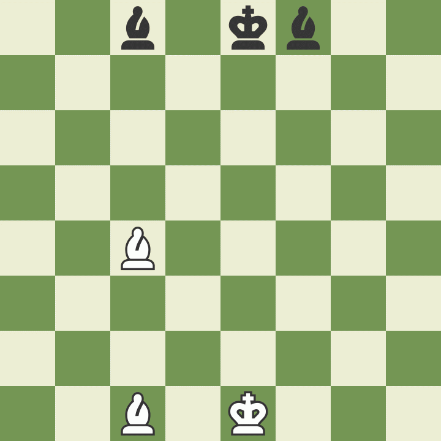

Login
Registrierung
Spielregeln
Login
Registrierung
Spielregeln
An der Reihe ist: Weiß
Bauern sind ungewöhnlich da sich die Weise wie sich bewegen und schlagen unterscheiden: Sie bewegen
sich vorwärts, schlagen aber diagonal. Sie bewegen sich ein Feld pro Zug, außer es ist ihr erster
Zug, in welchem falle sie sich optional zwei Felder weit bewegen können. Bauern können nur ein Feld
weit diagonal von sich schlagen. Sie können sich niemals rückwärts bewegen oder rückwärts schlagen.
Befindet sich eine andere Figur direkt vor einem Bauer, ist der Bauer blockiert.

Der Turm darf sich so weit bewegen wie er will, aber nur vorwärts, rückwärts und seitwärts. Die
Türme sind besonders starke Figuren wenn sie sich gegenseitig schützen und zusammenarbeiten!

Der Läufer darf soweit ziehen, wie er will, allerdings nur entlang der Diagonalen. Jeder Läufer beginnt auf einer Spielfeldfarbe (schwarz oder weiß) und bleibt das gesamte Spiel auf dieser Farbe. Läufer ergenzen einander gut, da sie die gegeseitige Schwäche aufheben. 
Springer bewegen sich ganz anders als andere Figuren: Zwei Felder vorwärts und eines zur Seite, also
in der Form des Buchstaben "L". Der Springer ist die einzige Figur, die über andere Figuren springen
kann.

Die Dame ist die stärkste Figur. Sie kann sich gerade in alle Richtungen bewegen- vorwärst,
rückwärts, zu den Seiten und diagonal- jeweils soviele Felder wie ihr keine eigene Figur im Weg
steht. Und wie mit jeder anderen Figur: Wenn die Dame eine gegnerische Figur schlägt, kann sie nicht
weiter ziehen. Sieh mal, wie die weiße Dame die schwarze schlägt und der König so zu einem Zug
gezwungen wird.

Der König ist die wichtigste Figur, ist aber gleichzeitig einer der schwächsten. Er kann sich nur
ein Feld in jede Richtung bewegen - hoch, runter, zu den Seiten und diagonal. Der König darf sich
niemals von selbst ins Schach setzen, d.h. auf ein vom Gegner kontrolliertes Feld ziehen. Wenn ein
Spieler am Zug ist und mit einer seiner Figuren das Feld des gegnerischen Königs beansprucht, nennt
sich das "Schach".

Bauern besitzen eine weitere Spezialfähigkeit: Wenn ein Bauer bis zur gegnerischen Grundreihe gelangt, darf er in jede andere Figur (außer in den König) umgewandelt werden. Ein häufiger Irrtum ist, dass Bauern nur in eine bereits vom Gegner geschlagene Figur umgewandelt werden dürfen. Meistens wird ein derart vorgerückter Bauer in eine Dame verwandelt. Nur Bauern können umgewandelt werden.
Eine letzte Regel für Bauern ist das sogenannte "en passant", was im Französischen "im Vorbeigehen" bedeutet. Falls ein Bauer sich zwei Felder weit bei seinem ersten Zug bewegt, und dabei seitlich neben dem Bauern eines Gegners landet (also effektiv die Schlag-Gelegenheit dieses Bauerns überspringt), dann hat der andere Bauer die Möglichkeit, diesen zu schlagen. Dieser besondere Zug muss unmittelbar auf den zuerst besprochen Bauernzug folgen, ansonsten vergeht die Möglichkeit des "en passant". Klicke dich durch das Beispiel unten, um diese seltsame, aber wichtige Regel besser zu verstehen.
Eine weitere Spezialregel nennt sich Rochade. Dieser Zug erlaubt es, zwei wichtige Dinge auf einmal
zu erledigen: deinen König (hoffentlich) in Sicherheit zu bringen und deinen Turm aus der Ecke
heraus und ins Spiel zu bekommen. Ist ein Spieler am Zug und rochiert, darf er dabei seinen König 2
Felder nach rechts oder links verschieben und gleichzeitig den Turm, der in der jeweiligen
Zugrichtung des Königs steht, auf das unmittelbare Nachbarfeld zur anderen Seite des Königs stellen.
(Siehe Bsp. unten.) Allerdings müssen für das Ausführen einer Rochade einige Bedingungen erfüllt
sein: 
Hast du bemerkt, dass bei der Rochade in die eine Richtung der König näher zum Brettrand steht? Damit hast du "kurz" rochiert. Rochierst du hingegen auf die andere Seite, in Richtung der Anfangsposition der Dame, hast du "lang" rochiert. Bei beiden Variaten bewegt sich der König nur 2 Felder zur Seite.
Gelegentlich enden Schachpartien nicht mit einem Gewinner, sondern mit einem Unentschieden, also einem Remis. Es gibt fünf Gründe warum ein Schachspiel im Remis enden kann:
Wie zuvor erklärt, ist es das Ziel des Spiels, den gegnerischen König Schachmatt zu setzen. Dies gelingt, wenn der König Schach gesetzt ist und sich nicht aus dem Schach heraus bewegen kann. Es gibt nur drei Wege durch die ein König sich dem Schach entziehen kann:
Ein Schachmatt ist eine Stellung im Schachspiel, in der ein König im Schach steht und es keinen regelgerechten Zug gibt, dieses Schachgebot aufzuheben. Mit einem Schachmatt ist die Partie beendet und für den Spieler, dessen König schachmatt gesetzt wurde, verloren. Davon zu unterscheiden ist das Patt, bei dem der Spieler am Zug zwar ebenfalls keine legalen Zugmöglichkeiten hat, sein König aber nicht im Schach steht. Im Falle von Patt endet die Partie remis.